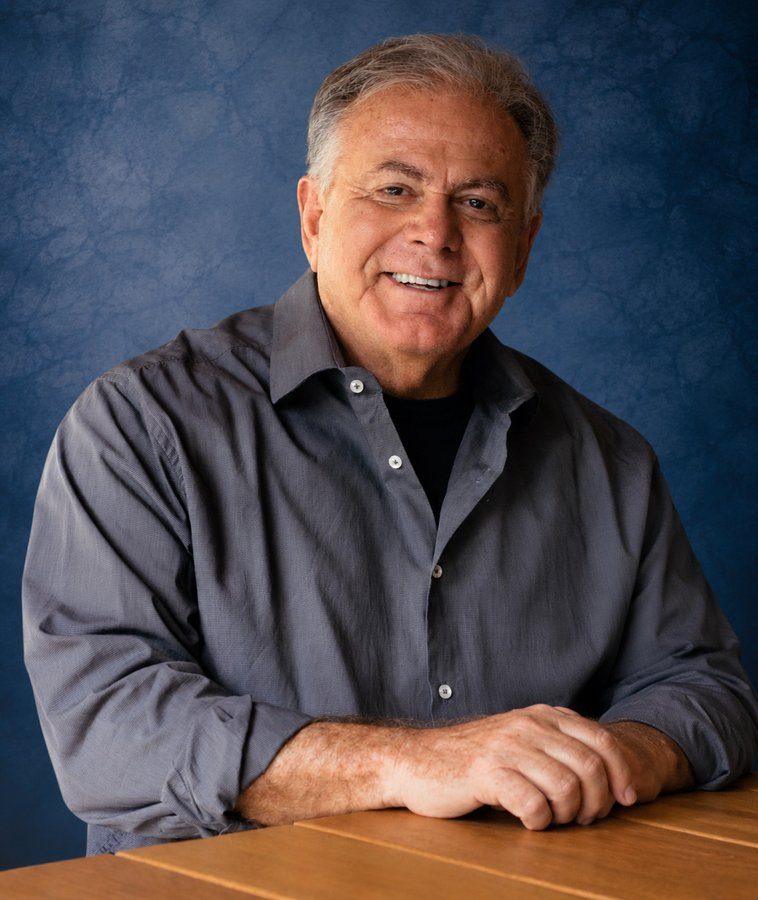
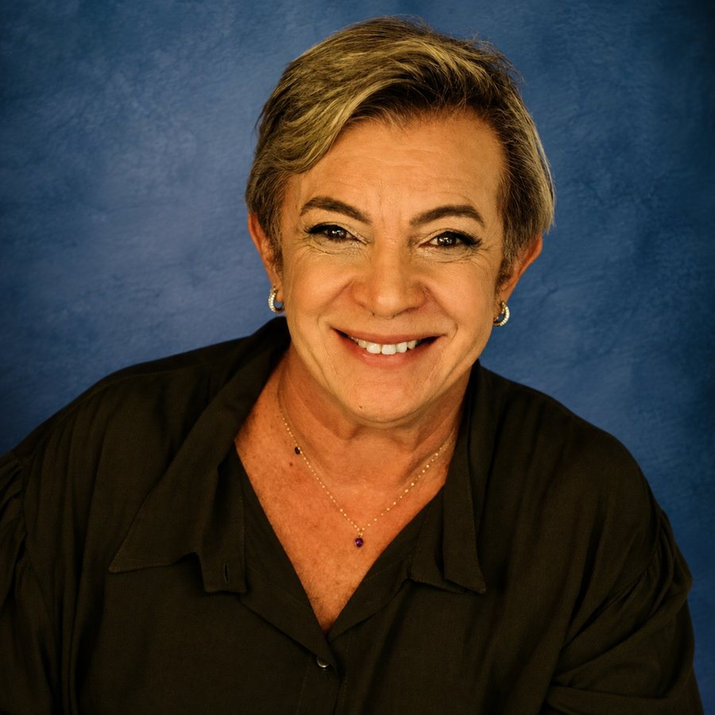
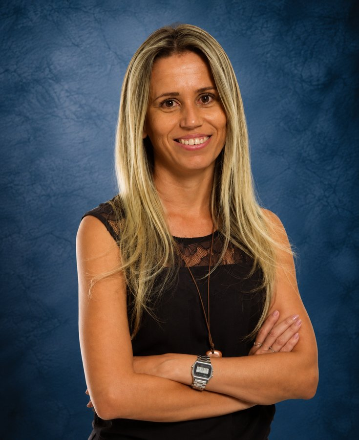
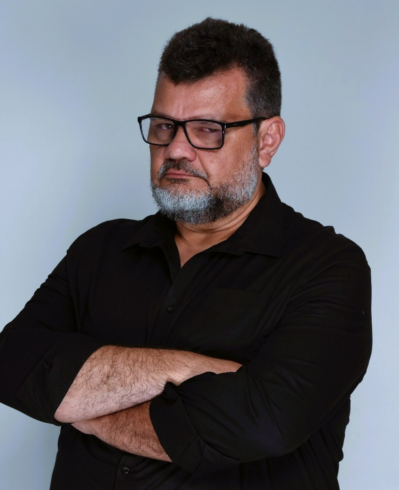
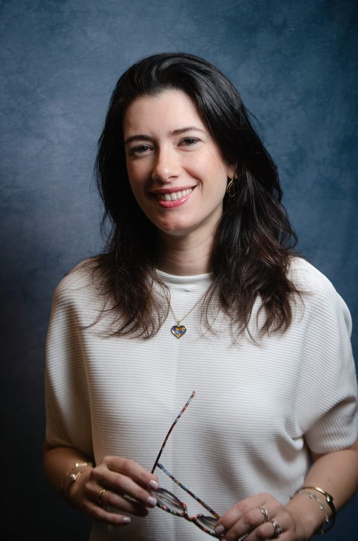

Formação avançada para cirurgiões-dentistas que desejam aprofundar competências para prevenir, reconhecer e manejar situações críticas no ambiente odontológico — com especial pertinência para quem é responsável pela sedação e anestesia e para quem realiza procedimentos de maior complexidade.
A prática odontológica contemporânea incorpora recursos diagnósticos, monitorização, farmacologia, sedação, anestesia, técnicas cirúrgicas e tecnologias que exigem preparação clínica compatível com a responsabilidade assumida pelo profissional.
Para o cirurgião-dentista que atua nesse contexto, segurança é um conjunto articulado de competências: avaliação criteriosa do paciente, identificação de riscos, monitorização clínica e instrumental, reconhecimento precoce de alterações relevantes, interpretação dos dados, decisão e capacidade de intervir. O SAVO foi desenvolvido para aprofundar essas competências dentro da realidade profissional do cirurgião-dentista.
A sedação em Odontologia pressupõe planejamento, avaliação criteriosa do paciente, monitorização compatível com a técnica e domínio das competências necessárias à condução clínica, à intervenção e ao resgate. Monitorização e capacidade de intervenção integram a segurança clínica e o cumprimento dos requisitos normativos dessa prática.
A curva capnográfica é estudada em associação aos sinais clínicos, à oximetria e ao ECG, integrando a informação ventilatória ao raciocínio e à decisão.
Suporte ventilatório, manejo das vias aéreas e utilização de medicamentos de urgência, reversão e resgate diante de alterações respiratórias e cardiovasculares.
Estabelecer prioridades, distribuir funções, comunicar decisões e conduzir estabilização, acionamento do suporte externo e transferência quando indicadas.
A formação se organiza em três dimensões complementares, que orientam a progressão do aluno da fundamentação aos cenários integrados de simulação.
Sustentam a avaliação do paciente, a estratificação de riscos, a interpretação dos sinais e da monitorização e o reconhecimento das situações que requerem intervenção.
Organizam equipamentos, medicamentos, protocolos, checklists, atribuições da equipe, suporte externo, estabilização, transferência e documentação.
Traduzem conhecimento e processo em desempenho: decidir, executar, comunicar, coordenar a equipe, reavaliar o paciente e ajustar a resposta.
Oximetria, curva capnográfica, fundamentos do ECG e ritmos críticos — integrados ao ABCDE e aos sinais clínicos.
Oxigenoterapia, aspiração, bolsa-válvula-máscara e escalonamento com dispositivos supra e infraglóticos.
RCP de alta qualidade, DEA, acesso venoso, fluidoterapia e medicamentos de urgência, reversão e resgate.
Consciência situacional, prioridades, comunicação objetiva e coordenação da resposta no tempo clínico disponível.
A etapa telepresencial estrutura os fundamentos jurídicos, clínicos e técnicos. Ao término da teoria, há uma verificação de conhecimento antes da progressão para o presencial.
Na etapa presencial, cada competência é treinada em estações e cenários simulados, em pequenos grupos, com tempo, pressão e comunicação de equipe reais — seguidos de debriefing estruturado.
Ao concluir o percurso acadêmico do SAVO, espera-se que o cirurgião-dentista seja capaz de:
A avaliação acompanha todo o percurso acadêmico, do conhecimento inicial à resposta integrada em cenário.
Pré-teste diagnóstico para identificar o conhecimento inicial.
Ao término da etapa telepresencial, avalia o domínio dos fundamentos antes do presencial.
Observação de habilidades e tomada de decisão durante as atividades.
Cenário integrado ao final das 16h para demonstrar a resposta às situações do programa.
A certificação é condicionada ao cumprimento dos critérios acadêmicos de frequência e aprovação estabelecidos pela coordenação.
A referência completa da formação para consultar em todo o percurso.
Guias visuais para organizar o raciocínio na hora da decisão.
Para o treinamento e a padronização da resposta da equipe.
Conteúdo para chegar pronto à etapa teórica.
Materiais de revisão relacionados às emergências abordadas.
Materiais das estações práticas e recursos de simulação inclusos.
O SAVO é exclusivo para cirurgiões-dentistas e foi concebido como formação transversal em segurança e emergências médicas no ambiente odontológico. Tem particular pertinência para:
Pela importância da monitorização, das vias aéreas, da ventilação, da farmacologia de resgate e da coordenação de uma resposta avançada.
Procedimentos de maior complexidade, nos quais avaliação de risco, monitorização e preparação para emergências são parte da prática.
Atendimento a crianças e pacientes com necessidades especiais, com avaliação e resposta adaptadas ao perfil de cada paciente.
O SAVO aprofunda competências dentro do campo profissional do cirurgião-dentista. A formação não amplia o escopo de atuação profissional nem confere, isoladamente, habilitação em sedação.
Os alunos que cumprirem os critérios acadêmicos de frequência e aprovação recebem o Certificado SAVO — Suporte Avançado de Vida para a Odontologia.
Formação complementar em Suporte Avançado de Vida para a Odontologia, com 32 horas certificadas.
Para os profissionais abrangidos pelo art. 48 da Resolução CFO nº 295/2026, prevê-se atualização pelo menos a cada 2 anos.
Certificação da linha Cultura de Segurança do Grupo Nitro, orientada por consensos científicos.

Formou a primeira turma de sedação inalatória do país em 2000. Com mais de 25 anos no ensino da sedação em Odontologia, responde pela coordenação administrativa e acadêmica.

Formou a primeira turma de sedação inalatória do país em 2000 e participou da construção da Resolução CFO 51/2004. Com mais de 25 anos no ensino da sedação em Odontologia, coordena a equipe acadêmica e garante o alinhamento entre o conteúdo clínico e a realidade do consultório.
Graduada pela UFRJ; especialista em Periodontia, Implante, Saúde Coletiva e Farmacologia (UFLA); Board in Conscious Sedation pela Loyola University; mestre em Saúde Coletiva pela FOP/Unicamp. Professora de sedação em Odontologia no IOPUC-RJ e FACOP. Integra as comissões de Sedação e Anestesia e de Biossegurança do CRO-RJ e a Comissão de Regulamentação da Sedação do CFO.

Especialista em docência do ensino superior, terapia intensiva, centro cirúrgico, central de material e esterilização e urgência e emergência. Mestre em ensino na saúde e doutora em ciências do cuidado à saúde. Docente da Universidade Estácio de Sá e da FUSVE (campus Saquarema) e coordenadora de enfermagem da UNIABEU.

Especialista em enfermagem em urgência e emergência, terapia intensiva, enfermagem do trabalho e gestão de emergências e desastres. Mestre em enfermagem pela EEAN/UFRJ e membro do GEPESED (Grupo de Ensino, Pesquisa e Extensão em Saúde nas Emergências e Desastres). Docente da FUSVE (campus Saquarema). Também graduado em Direito, com especialização em Direito do Consumidor e Responsabilidade Civil.
